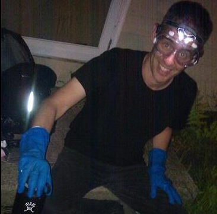

About
My name is Don Blair. I’m a graduate student in Physics at the University of Massachusetts, a Fellow at the National Center for Digital Government, and an organizer for The Public Laboratory for Open Technology and Science. This site contains some related notes. Other places to find me online:
- I contribute to Public Lab as “donblair”;
- I contribute to Pioneer Valley Open Science as “Don”;
- I’m on github as “dwblair”;
- I’m on Twitter as “donwblair”;
- I’m on Skype as “dwingateb”;
- You can email me at “donblair at pvos dot org”.
Wiki / Notes
I’m trying to index various notes and documents on github in wiki format. If we’re collaborating on something, and we’re sharing an online document, you can probably find a link to it there (also accessible via the “Notes” link on the top right of this page).